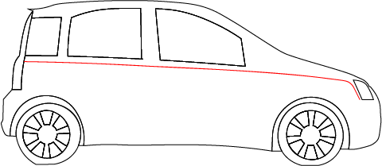
Specifikacije
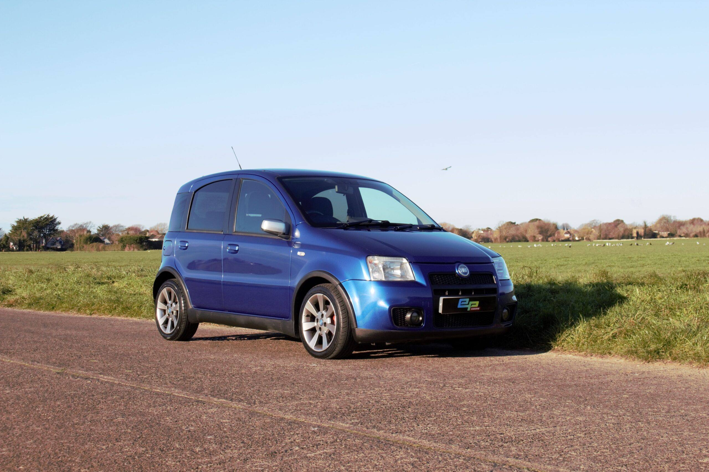
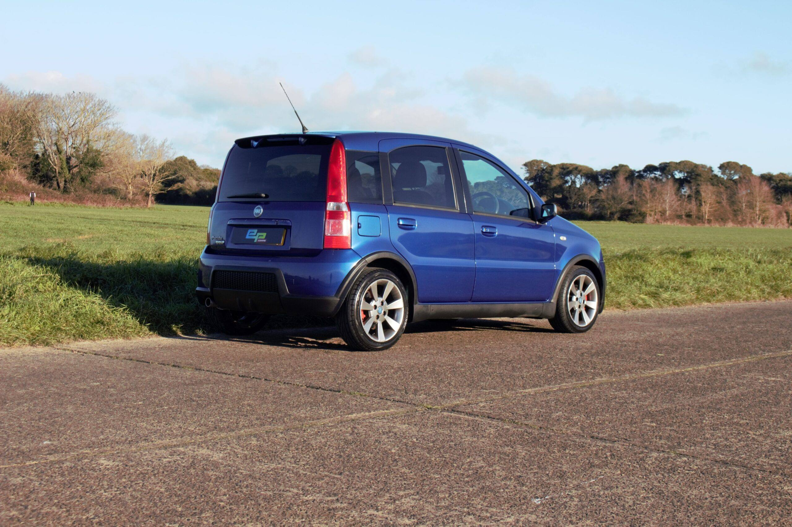
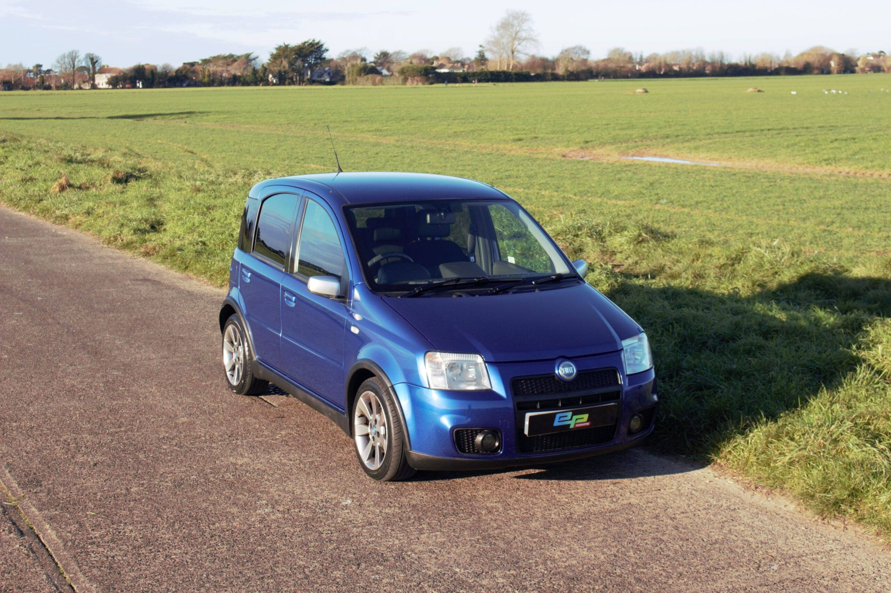
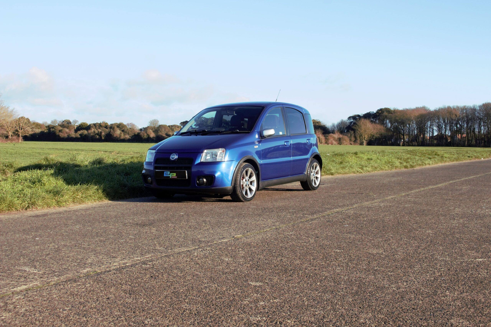
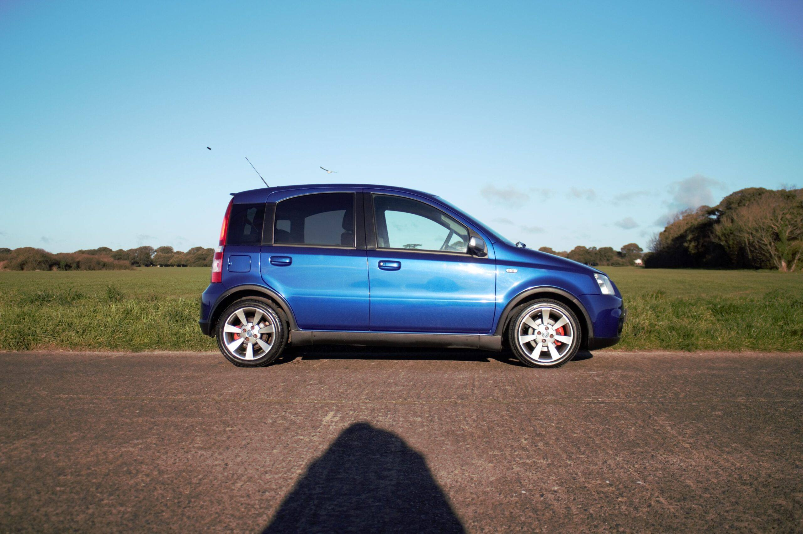
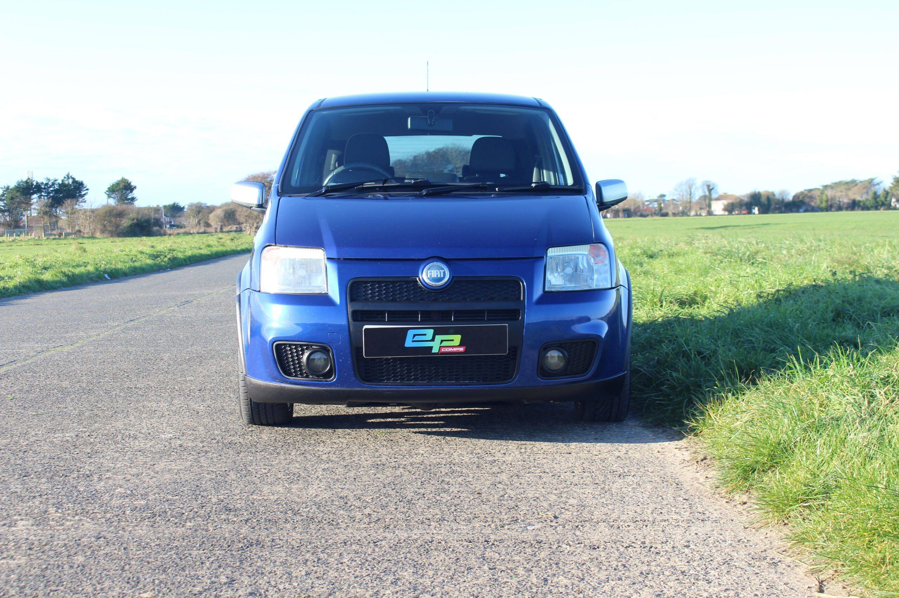
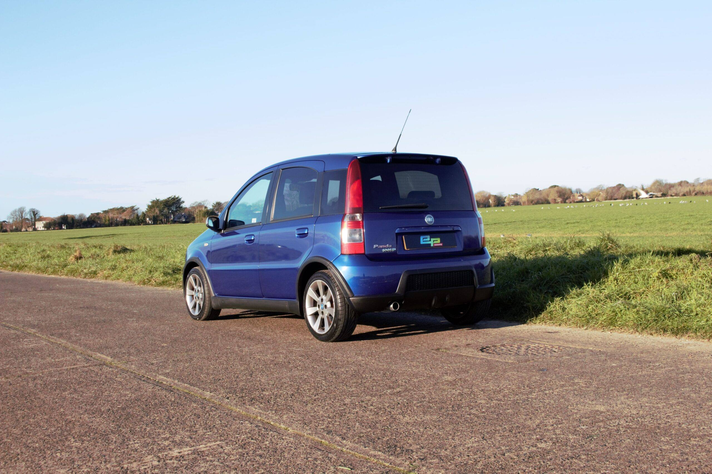
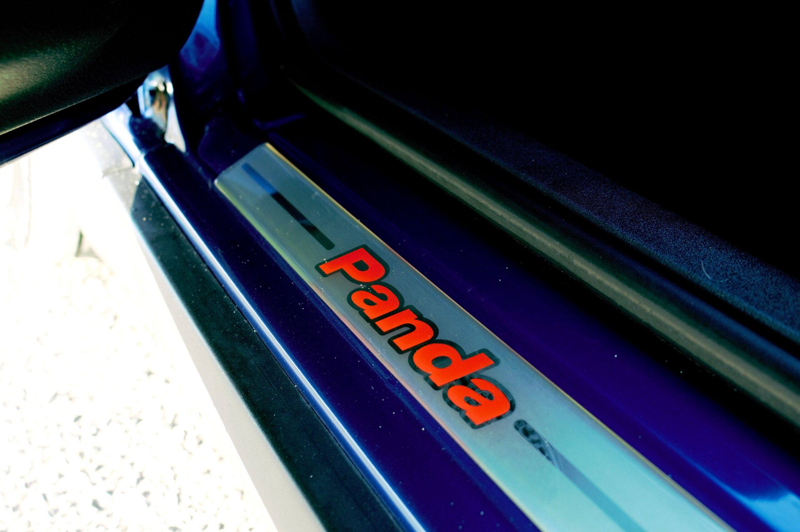
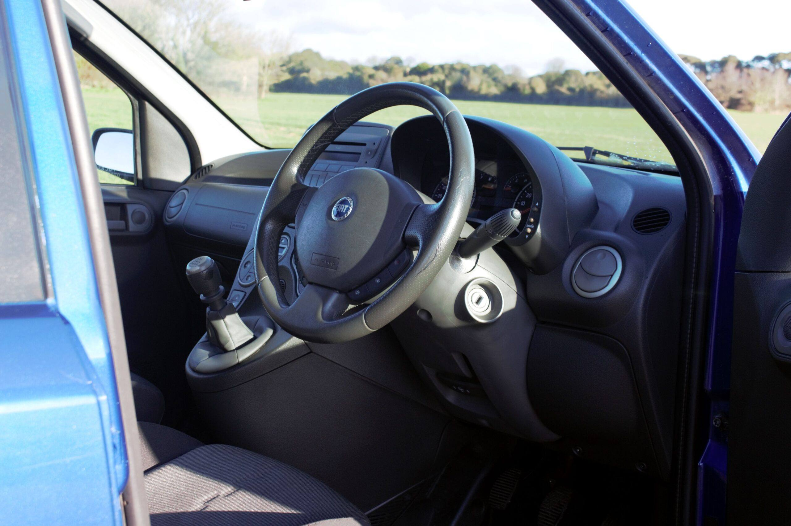
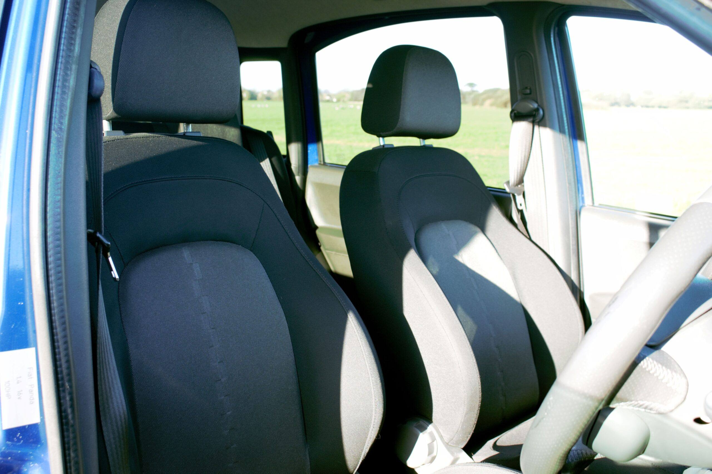
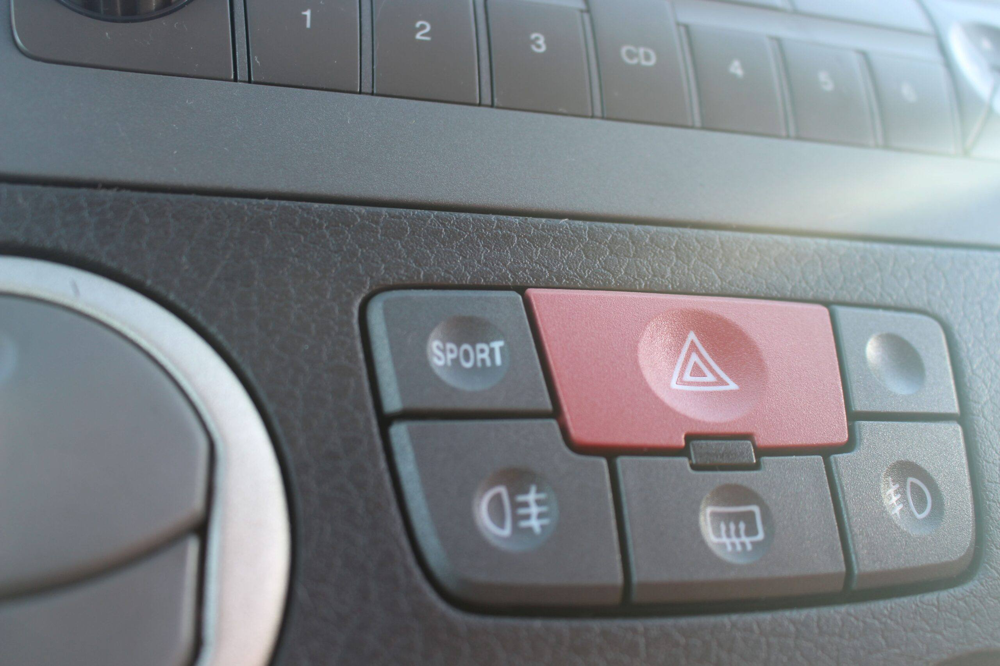
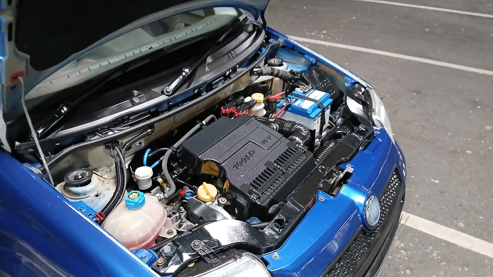
Legendarni gradski sportista sa 100 KS. Slike su preuzete sa sajta EP-Comps.
Snimak zvuka i ubrzanja Fiat Panda 100HP, sa YouTube kanala Ivan Atzori.
Video recenzija Fiat Panda 100HP od JayEmm On Cars.